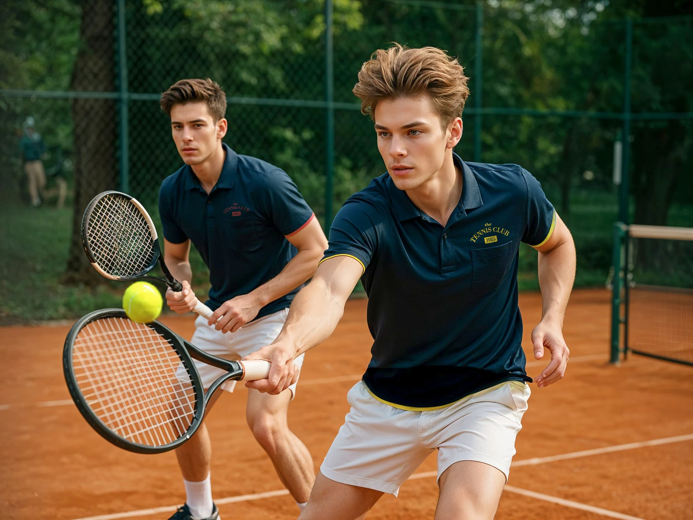
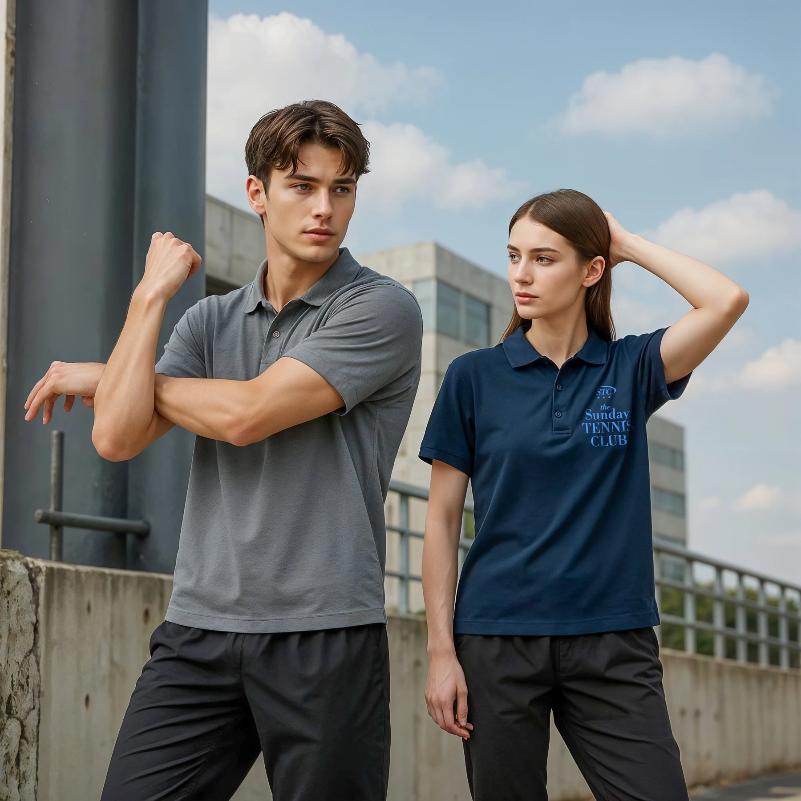

← 모든 작업물AI / 11
AI · Apparel
어패럴 컨셉츄얼 이미지 추출 및 보정
2025- 제작 연도
- 2025
- 작업 기간
- 3시간
- 사용 프로그램
- Adobe Photoshop
기여도 및 작업 범위
기여도 100% 개인 작업
실제 제품에 맞는 이미지를 만들기 위해 AI의 특성을 고려한 프롬프트를 제작하고, 추출한 이미지를 보정했습니다.


AI · Apparel
기여도 100% 개인 작업
실제 제품에 맞는 이미지를 만들기 위해 AI의 특성을 고려한 프롬프트를 제작하고, 추출한 이미지를 보정했습니다.

